Linux
查看cpu信息和开关cpu内核
cat /proc/cpuinfo
查看cpu内核数量:
ls /sys/devices/system/cpu/
显示的cpu0,cpu1...便是相应的cpu内核,从0开始最后一个数加1便是总内核数
关闭某个内核如cpu3号内核:
echo 0 > /sys/devices/system/cpu/cpu3/online
开启某个内核如cpu3号内核:
echo 1 > /sys/devices/system/cpu/cpu3/online
efibootmgr修改主板上EFI的设备启动项
efibootmgr
查看启动项列表详细信息:
efibootmgr -v
参数列表可参考:
man efibootmgr
或 efibootmgr(8): change EFI Boot Manager - Linux man page
删除启动项:
efibootmgr -b 启动项编号 -B
如删除编号为0002的项
efibootmgr -b 0002 -B
创建启动项:
efibootmgr -c -w -L "启动项名称" -d 存储设备路径 -p 分区编号 -l 启动文件相对于前面指定的分区的路径
如创建启动项叫mylinux, 启动文件在/boot/efi/EFI/fedora/shimx64.efi, 此文件在分区/dev/sda1, /dev/sda1的挂载路径为/boot/efi/
efibootmgr -c -w -L "mylinux" -d /dev/sda -p 1 -l \\EFI\\fedora\\shimx64.efi
修改启动项顺序:
efibootmgr -o 用,分隔的启动项编号
如修改启动项顺序为0002,0003,0001
efibootmgr -o 0002,0003,0001
make install, make uninstall, make clean
先解压
然后cd进入源码目录
检查环境，配置编译条件
./configure
调用gcc进行编译
make
安装编译好的可执行程序
sudo make install
卸载软件：
删除make install命令时装进去的文件
sudo make uninstall
只删除make时产生的临时文件
make clean
同时删除configure和make产生的临时文件(soft1下)
make distclean
make的原理是执行一个叫Makefile文件里的指令，make的基本用处是自动根据makefile里的指令来编译源文件。它还可以用来做比如安装软件，卸载软件等事情，但前提是作者在makefile里写了。比如makefile里有这么些内容：
......
install : < commands >
然后用make install的话，make程序就会按照上面install：后面的指令< commands >执行安装，uninstall也是一样的道理，大部分的作者会写有卸载的部分，这时只要简单地执行make unistall就可以，如果作者懒没有写，那就只有根据make install中的步骤，看它把什么文件拷到哪去了，然后分别手动删除。
还有关键的一点是，编译安装完成后，不要删除源代码，不然就算作者写了uninstall目标，你也没有makefile可以执行了。
UUID, PARTUUID
PARTUUID is a partition-table-level UUID for the partition, a standard feature for all partitions on GPT-partitioned disks. Since it is retrieved from the partition table, it is accessible without making no assumptions at all about the actual contents of the partition. If the partition is encrypted using some unknown encryption method, this might be the only accessible unique identifier for that particular partition.
PTUUID is the UUID of the partition table itself, a unique identifier for the entire disk assigned at the time the disk was partitioned. It's the equivalent of disk signature on MBR-partitioned disks, but with more bits and standardized procedure for its generation.
On MBR-partitioned disks, there are no real UUIDs in the partition table. So, the 32-bit disk signature is used in place of a PTUUID, and PARTUUIDs are created by adding a dash and a two-digit partition number to the end of the disk signature.
分区
parted
MBR分区用:
fdisk
文件系统
1：单字节写入性能对比
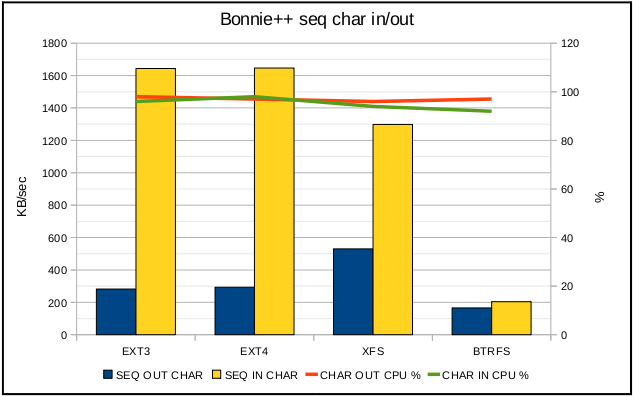
A：由于硬盘式块设备所以对于这种测试硬盘式不擅长的
B：btrfs系统只有200K/SEC,xfs表现的性能比较平衡。
2：块写入性能对比（由于硬盘是块设备这种对比来的更有意义）
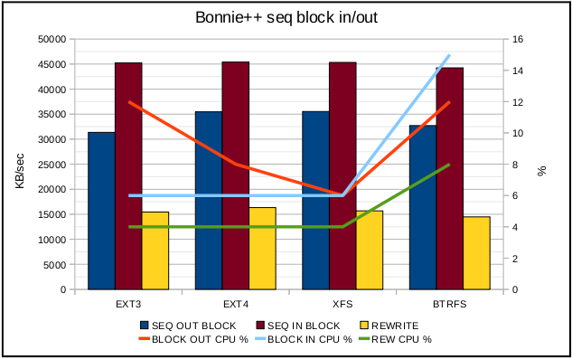
A：性能上差不多，但是效率上（CPU占用率上）来说最好的是xfs接下来依次是EXT4，EXT3，BTRFS
3：直接块顺序读写（关掉任何的系统和文件缓存）
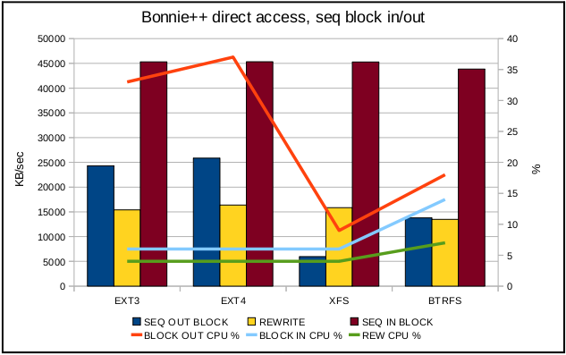
A：绕过系统和文件缓冲的话（例如：视频录制，一些虚拟机软件，ECC），EXT3/ 4是最好的选择，其次是BTRFS，最后是XFS。
B：没有一种文件系统可以适用于所有环境
4：随机寻道
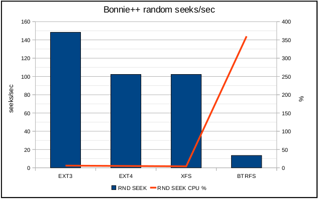
A：BTRFS系能最差，不到20 seeks/sec
B：EXT3性能最好，如果软件大量的随机寻址的话这个文件系统性能更好
5：创建和删除大量文件（文件量一定）
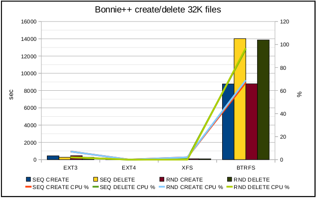
BTRFS系统性能最差，下面是去掉该系统其它3种的对比

A：EXT4是更高效高性能的系统，接下来依次是XFS,EXT3
6：顺序读写吞吐量【没有fsync的是100 writes/one fsync()，有的是1 writes/one fsync()】
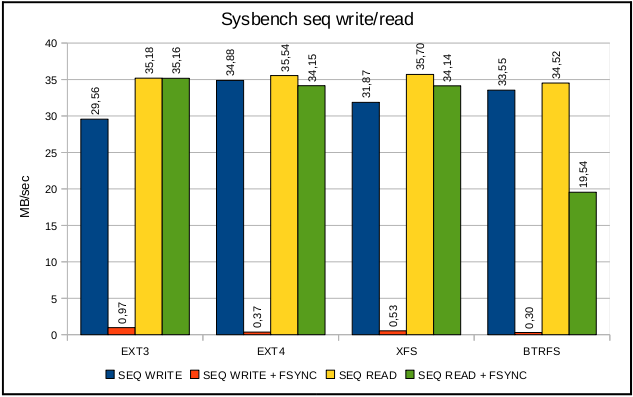
A：100 writes/one fsync()各个性能差不多
B：1 writes/one fsync()时EXT3性能最好，接下来依次是XFS,EXT4，BTRFS
C：write + fsync()在BTRFS下对读性能产生影响
7：随机读写吞吐量
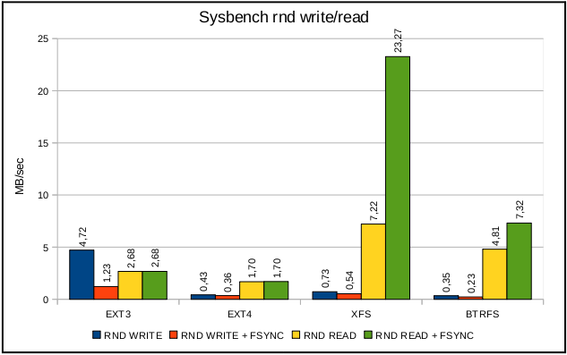
A：100 seeks/sec每个块16 KB，我们得出最大的读取速度是1600 KB/sec，XFS，BTRFS大于了这个数值（可能数据不能随机也可能缓冲影响了结果）
B：EXT3随机写入性能是最好的，适用于数据库，高容量的记录程序和虚拟机系统
8：向PostgreSQL 中写入10万行数据

A：BTRFS 性能是最好的，EXT4和XFS很低的cpu使用率但是性能太差
9：读测试
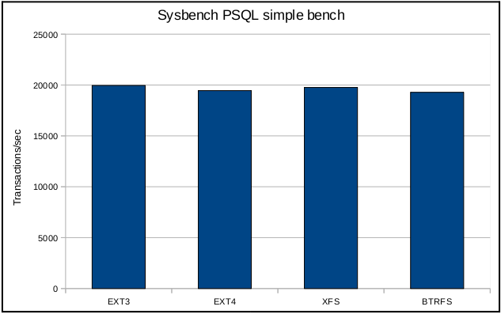
A：10万次的读测试，性能差别不大
10：复杂的读写以及事务测试
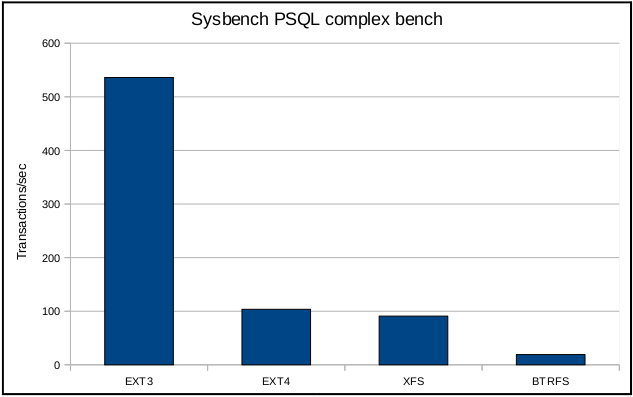
A：EXT3性能最好
所以，数据库最好是EXT3系统，除非EXT4解决了所谓的回归问题。
11：Linux kernel 2.6.36下的解包操作
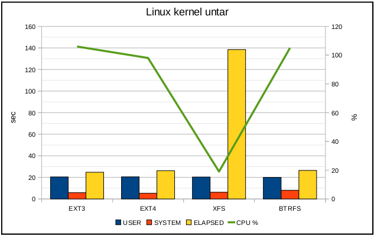
A：该操作最好的文件系统是EXT4
这次操作会受到缓存和延时分配的影响，我们强制同步看看效果
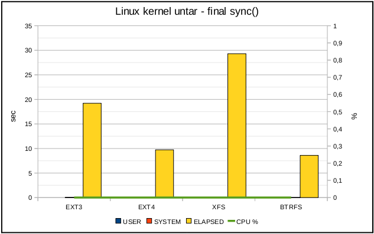
A：XFS是较慢的FS，EXT3慢于EXT4和BTRFS
12：cat操作
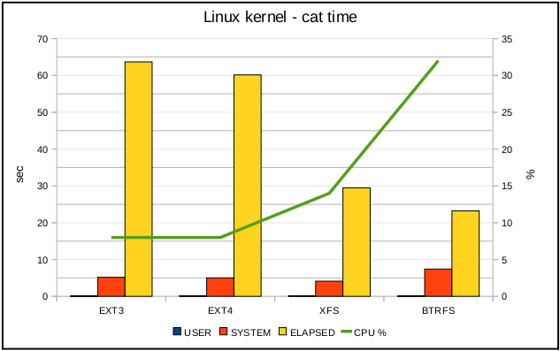
A：该操作比较有效率的系统是XFS
B：该执行最快CPU占用最高的系统是BTRFS，，说明该系统有复杂的元数据操作
13：解压linux核心（会产生32000 files）
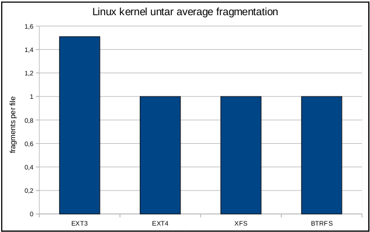
A：EXT3这个唯一没有延时分配能力的系统是最差的
14：顺序创建128个文件，每个长16 MB（共2 GB）各种系统产生的碎片情况
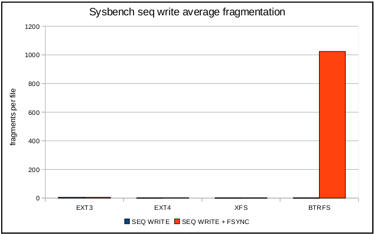
A：BTRFS系统碎片是个严重的问题（这也解释了先前的这种系统读性能低下的原因）
出去BTRFS系统后的图
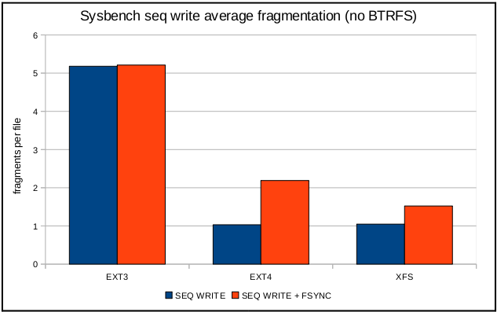
A：EXT4，XFS这种有延时分配机制的系统产生的碎片少于EXT3（即使one write/one fsync()）
15：随机创建128个文件，每个长16 MB（共2 GB）各种系统产生的碎片情况
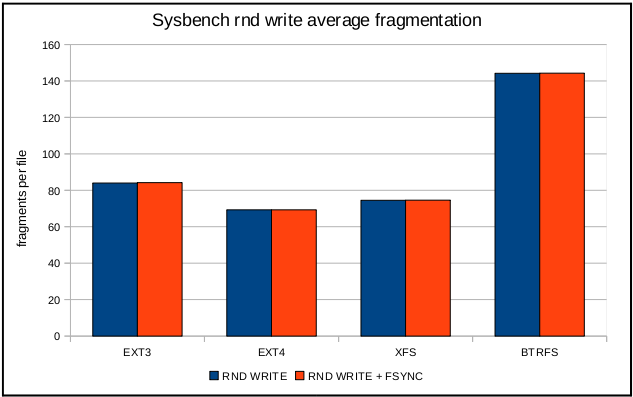
A：随机写入在任何系统下都会产生碎片，即使有延时分配也没用
Linux kernel 自 2.6.28 开始正式支持新的文件系统 Ext4。 Ext4 是 Ext3 的改进版，修改了 Ext3 中部分重要的数据结构，而不仅仅像 Ext3 对 Ext2 那样，只是增加了一个日志功能而已。Ext4 可以提供更佳的性能和可靠性，还有更为丰富的功能：
1. 与 Ext3 兼容。执行若干条命令，就能从 Ext3 在线迁移到 Ext4，而无须重新格式化磁盘或重新安装系统。原有 Ext3 数据结构照样保留，Ext4 作用于新数据，当然，整个文件系统因此也就获得了 Ext4 所支持的更大容量。
2. 更大的文件系统和更大的文件。较之 Ext3 目前所支持的最大 16TB 文件系统和最大 2TB 文件，Ext4 分别支持 1EB（1,048,576TB， 1EB=1024PB， 1PB=1024TB）的文件系统，以及 16TB 的文件。
3. 无限数量的子目录。Ext3 目前只支持 32,000 个子目录，而 Ext4 支持无限数量的子目录。
4. Extents。Ext3 采用间接块映射，当操作大文件时，效率极其低下。比如一个 100MB 大小的文件，在 Ext3 中要建立 25,600 个数据块（每个数据块大小为 4KB）的映射表。而 Ext4 引入了现代文件系统中流行的 extents 概念，每个 extent 为一组连续的数据块，上述文件则表示为“ 该文件数据保存在接下来的 25,600 个数据块中”，提高了不少效率。
5. 多块分配。当写入数据到 Ext3 文件系统中时，Ext3 的数据块分配器每次只能分配一个 4KB 的块，写一个 100MB 文件就要调用 25,600 次数据 块分配器，而 Ext4 的多块分配器“multiblock allocator”（mballoc） 支持一次调用分配多个数据块。
6. 延迟分配。Ext3 的数据块分配策略是尽快分配，而 Ext4 和其它现代文件操作系统的策略是尽可能地延迟分配，直到文件在 cache 中写完才开始分配数据块并写入磁盘，这样就能优化整个文件的数据块分配，与前两种特性搭配起来可以显著提升性能。
7. 快速 fsck。以前执行 fsck 第一步就会很慢，因为它要检查所有的 inode，现在 Ext4 给每个组的 inode 表中都添加了一份未使用 inode 的列表，今后 fsck Ext4 文件系统就可以跳过它们而只去检查那些在用的 inode 了。
8. 日志校验。日志是最常用的部分，也极易导致磁盘硬件故障，而从损坏的日志中恢复数据会导致更多的数据损坏。Ext4 的日志校验功能可以很方便地判断日志数据是否损坏，而且它将 Ext3 的两阶段日志机制合并成一个阶段，在增加安全性的同时提高了性能。
9. “无日志”（No Journaling）模式。日志总归有一些开销，Ext4 允许关闭日志，以便某些有特殊需求的用户可以借此提升性能。
10. 在线碎片整理。尽管延迟分配、多块分配和 extents 能有效减少文件系统碎片，但碎片还是不可避免会产生。Ext4 支持在线碎片整理，并将提供 e4defrag 工具进行个别文件或整个文件系统的碎片整理。
11. inode 相关特性。Ext4 支 持更大的 inode，较之 Ext3 默认的 inode 大小 128 字节，Ext4 为了在 inode 中容纳更多的扩展属性（如纳秒时间戳或 inode 版本），默认 inode 大小为 256 字节。Ext4 还支持快速扩展属性（fast extended attributes） 和 inode 保留（inodes reservation）。
12. 持久预分配（Persistent preallocation）。P2P 软件为了保证下载文件有足够的空间存放，常常会预先创建一个与所下载文件大小相同的空文件，以免未来的数小时或数天之内磁盘空间不足导致下载失 败。Ext4 在文件系统层面实现了持久预分配并提供相应的 API（libc 中的 posix_fallocate()），比应用软件自己实现更有效率。
13. 默认启用 barrier。磁盘上配有内部缓存，以便重新调整批量数据的写操作顺序，优化写入性能，因此文件系统必须在日志数据写入磁盘之后才能写 commit 记录， 若 commit 记录写入在先，而日志有可能损坏，那么就会影响数据完整性。Ext4 默认启用 barrier，只有当 barrier 之前的数据全部写入磁盘，才能写 barrier 之后的数据。（可通过 "mount -o barrier=0" 命令禁用该特性。）
查看文件的inode
其中file_path为文件的路径, 也可以在文件所在的路径下直接
ls -i
通过文件的inode来查找文件
其中/为根路径, file_inode为文件的inode
查找一个文件的所有硬链接
在根路径下通过文件的inode进行查找
笔记本触摸板鼠标
synclient touchpadoff=0
关闭触摸板鼠标
synclient touchpadoff=1
修改用户账号, 如锁定解锁等The usermod command modifies the system account files to reflect the changes that are specified on the command line
解锁用户密码
usermod -U username
锁定用户密码
usermod -U username
截屏
全屏截图不含鼠标:gnome-screenshot
全屏截图含鼠标:gnome-screenshot -p
截取鼠标选定区域:gnome-screenshot -a执行后会等待鼠标选择区域, 在要选择的区域的一个角处鼠标点下别松开然后移动到对着的另一个角松开鼠标, 选择完成后即截取完成.
截取当前窗口:gnome-screenshot -w
截取当前去除边框的窗口:gnome-screenshot -w -B
截取当前窗口并换边框:gnome-screenshot -wB -e border用其中的B参数去掉边框再用e参数添加border样式的边框
延迟截取选定窗口:gnome-screenshot -d 5延迟5秒后截取活动窗口
打开gnome-screenshot软件图形化界面:gnome-screenshot -i
systemctl
tmpfs, ramfs
tmpfs是虚拟内存文档系统，数据存储在物理内存和交换分区(swap)。在Linux内核中，虚拟内存资源由物理内存（RAM）和交换分区组成，这些资源是由内核中的虚拟内存子系统来负责分配和管理。
大小不会自动增加, 挂载的目录大小受到限制保护，即往里写入数据不会超出限定的大小, 默认权限设置任何用户均可使用
ramfs是内存文档系统，工作于虚拟文档系统（VFS）层， 数据存储于物理内存中。
大小自动增加, 挂载的目录指定大小无效，即往里写入数据会超出限定的大小, 直到内存耗尽，系统挂起, 默认权限设置只有root用户能够使用
例如通过命令挂载时指定大小为1M
mount -t ramfs -o size=1M ramfs my_ramfs_dir
写入5M的数据
dd if=/dev/zero of=my_ramfs_div/size_test.txt bs=1M count=5
执行结果为成功
mount --bind 绑定挂载目录
mount --bind source_dir target_dir
执行后操作target_dir下的内容即为source_dir的内容, 相当与把source_dir文件(在linux中把设备如硬盘等设备均看作文件)挂载到target_dir目录下, 也类似于建立了一个硬链接
mount指定分区大小
其中size=4096M 为4096MB
mount -t tmpfs -o remount,size=80% tmpfs /dev/shm
size=80%为设置大小为内存的80%
/etc/fstab指定分区大小
其中size=4096M 为4096MB
U盘写入文件Read-only file system错误
用如下命令重新挂载即可
mount -o remount -rw usb_path/
其中usb_path/为U盘的挂载路径, -rw为读写
查看指定路径的man文件
man -l <filepath>
or
man --local-file <filepath>
用
man man
查看man自身的帮助手册, 其中的参数信息如下
-l, --local-file
Activate `local' mode. Format and display local manual files instead of searching through the system's manual collection. Each manual page argument will be interpreted as an nroff source file in the correct format. No cat file is produced. If '-' is listed as one of the arguments, input will be taken from stdin. When this option is not used, and man fails to find the page required, before displaying the error message, it attempts to act as if this option was supplied, using the name as a filename and looking for an exact match.
tar過濾部分文件打包
查看Linux内核版本的命令
uname -a
查看系统内核版本号及系统名称
or
cat /proc/version
查看目录"/proc"下version的信息，也可以得到当前系统的内核版本号及系统名称
补充说明:/proc文件系统，它不是普通的文件系统，而是系统内核的映像，也就是说，该目录中的文件是存放在系统内存之中的，它以文件系统的方式为访问系统内核数 据的操作提供接口。而我们使用命令“uname -a"的信息就是从该文件获取的，当然用方法二的命令直接查看它的内容也可以达到同等效果.另外，加上参数"a"是获得详细信息，如果不加参数为查看系统名称。
關機及重啟
關機
poweroff
or
shutdown -P now
or
shutdown -h now
或參考
man shutdown
10分鐘後關機
shutdown -h +10
18:30關機
shutdown -h 18:30
重啟
reboot
or
shutdown -r now
或參考
man shutdown
10分鐘後重啟
shutdown -r +10
18:30重啟
shutdown -r 18:30
ctrl+z(挂起),jobs(任务),fg(前台),bg(后台),kill(终止进程)
ctrl+z
ctrl+z挂起前台命令暂停执行，回到shell命令行环境中
jobs
察看当前shell下运行的所有程序；带+表示最新的jobs；带-表示次新的jobs；其他jobs不带符号
bg %n
将第n个job放到后台运行
bg
将最后挂起的命令放到后台运行
fg %n
将第n个job返回前台运行
fg
将最后挂起的命令返回前台运行
kill %n
杀死第n个job，不再执行
mount -o loop
One further possible type is a mount via the loop device. For example, the command
mount /tmp/disk.img /mnt -t vfat -o loop=/dev/loop3
will set up the loop device /dev/loop3 to correspond to the file /tmp/disk.img, and then mount this device on /mnt.
If no explicit loop device is mentioned (but just an option `-o loop' is given), then mount will try to find some unused loop device and use that, for example
mount /tmp/disk.img /mnt -o loop
The mount command automatically creates a loop device from a regular file if a filesystem type is not specified or the filesystem is known for libblkid, for example:
mount /tmp/disk.img /mnt
mount -t ext3 /tmp/disk.img /mnt
This type of mount knows about three options, namely loop, offset and sizelimit, that are really options to losetup(8). (These options can be used in addition to those specific to the filesystem type.)
Since Linux 2.6.25 auto-destruction of loop devices is supported, meaning that any loop device allocated by mount will be freed by umount independently of /etc/mtab.
You can also free a loop device by hand, using losetup -d or umount -d.
Since util-linux v2.29 mount command re-uses the loop device rather than initialize a new device if the same backing file is already used for some loop device with the same offset and sizelimit.
This is necessary to avoid a filesystem corruption.
创建iso文件
use mkisofs create iso file
mkisofs -r -o mongodb_linux_x86_64_4.0.7.iso mongodb_linux_x86_64_4.0.7.tgz
-r : 设置所有文件拥有读取权限
-o : 在后面指定输出的iso文件的路径及文件名
use dd copy device content to file
dd if=/dev/cdrom of=vcd.iso
if : 数据源块路径
of : 输出文件的路径及文件名
查看系统配置信息
dmidecode
#模块信息
dmesg
#查看分区信息如uuid等
blkid
#查看外存及分区信息
lsblk
#查看usb设备
lsusb
设置分区的标签
#ext2/ext3/ext4
e2label [<device>] [<new_label>]
#xfs
xfs_admin -L [<new_label>] [<device>]
#jfs
jfs_tune -L [<new_label>] [<device>]
#Btrfs
btrfs filesystem label [<device>] [<new_label>]
#or
btrfs-filesystem label [<device>|<mountpoint>] [<new_label>]
#ReiserFS
reiserfstune -l [<new_label>] [<device>]
#swap
mkswap -L [<new_label>] [<device>]
#ntfs
ntfslabel [<device>] [<new_label>]
#for example set sda5 label is home
ntfslabel /dev/sda7 home
添加和删除用户
#添加用户angular4
adduser angular4
#添加用户组angular
groupadd angular
#设置用户angular4所在组为angular
usermod -g angular angular4
#查看用户组
vim /etc/group
#删除用户组
groupdel angular
groupdel angular4
#删除用户
userdel angular4
rm -rf /home/angular4
#if add this user again will got error
#Creating mailbox file: File exists
find / -name angular4
#the result include /var/spool/mail/angular4
rm -rf /var/spool/mail/angular4
#set user password
passwd angular4
#delete user password
passwd -d angular4
change run level
#before CentOS 7 is change /etc/inittab file, but from CentOS 7 is no longer use this, the new run level is in /usr/lib/systemd/system/*.target
#see current run level
systemctl list-units --type=target
#change run level to 3 level is
systemctl isolate multi-user.target
#change default run level to 3 level is
systemctl set-default multi-user.target
#old run level with new target relation is
runlevel0.target -> poweroff.target
runlevel1.target -> rescue.target
runlevel2.target -> multi-user.target
runlevel3.target -> multi-user.target
runlevel4.target -> multi-user.target
runlevel5.target -> graphical.target
runlevel6.target -> reboot.target
#can use the follow instruction to see all the target
ls -lh /usr/lib/systemd/system/*.target
CentOS 7 suspend and hibernate
equal
echo "mem" > /sys/power/state
systemctl hibernate
equal
echo "disk" > /sys/power/state
参考内容:
Linux电源管理(6)_Generic PM之Suspend功能 【sys/power】freeze、standby、mem、disk四个电源状态_勿于浮沙筑高台-CSDN博客
open port in iptabls or firewalld
#iptables is(in CentOS 7 not use this):
#add a data receive rule
iptables -A INPUT -p tcp --dport 22 -j ACCEPT
#add a data post rule
iptables -A OUTPUT -p tcp --sport 22 -j ACCEPT
#restart iptables service
service sshd restart
#firewalld is(in CentOS 7 use this):
#add a rule, with option parameter --permanent to persistent the rule
firewall-cmd --permanent --add-port=22/tcp
#restart firewalld service
systemctl restart firewalld
#ensure the new rule is active
firewall-cmd --query-port=22/tcp
set sshd service start with OS boot and start at now
#query ssdh service status
systemctl status sshd
#output the follow information
● sshd.service - OpenSSH server daemon
Loaded: loaded (/usr/lib/systemd/system/sshd.service; disabled; vendor preset: enabled)
Active: inactive (dead)
Docs: man:sshd(8)
man:sshd_config(5)
#so we see the Loaded: loaded (/usr/lib/systemd/system/sshd.service; disabled; vendor preset: enabled)
#the service is not start with OS boot, so we set it start with OS boot
systemctl enable sshd
#we also see Active: inactive (dead), that means the service is not run at current time, we start it at now
systemctl start sshd
双系统, 修复windows启动项
修改/boot/grub2/grub.cfg
找到在两个menuentry末尾添加一个win7启动设置，具体参数是
menuentry ‘win7’{
set root=(hd0,1)
chainloader +1
}
su
以root用户身份新建一个子shell并切换到这个shell进程中, 但保持当前状态的环境变量
su - root
新建并以root用户身份登陆一个子shell进程, 切换为root用户的环境变量
清屏命令
clear
or
ctrl + l
刷新屏幕，本质上只是让终端显示页向后翻了一页，如果向上滚动屏幕还可以看到之前的操作信息。
reset
完全刷新终端屏幕，之前的终端输入操作信息将都会被清空，这样虽然比较清爽，但整个命令过程速度有点慢，使用较少。
值得一提的是reset命令在你的终端控制错乱时非常有用。如输入字符不出现在光标的位置的情况。还有当你敲击回车键时，新提示符并没有出现在新行上而是出现在老提示符的前面。此时reset命令就能用来修正这些问题。
printf '\033c'
真正的清空了终端屏幕，它的功能跟DOS里CMD.EXE提供的CLS效果很相似。
工作原理是
\033 == \x1B == 27 == ESC
于是，这个命令变成了
键盘上Ctrl+v--->Esc-->输入c再回加。但如果你发现自己使用的是一个非常奇怪的终端（如在putty上），那这个命令你可能用不了。
printf是bash里内置的命令，内置命令的优先级比其它可执行文件要高。
or
printf '\ec'
\e等价于\033
or
echo -e '\ec\c'
or
echo -e '\033c\c'
or
echo -en '\ec'
or
echo -en '\033c'
操作目录命令
回到刚才的目录
cd -
目录压栈
pushd .
目录出栈
popd
查看内存
free
sync手动将存放在内存中的数据刷新到磁盘中
sync
Linux内核为了达到最佳的磁盘操作效率，会把需要写入到磁盘的数据现在内存中缓存起来，在合适的时候才真正写入到磁盘中，这在绝大多数情况都是没有任何问题的，而且提高了系统的效率，但是如果系统当机、掉电，就会有些文件内容不会保存下来。在Linux系统关机或者重启时，会自动把缓冲区的内容自动同步到磁盘中。我们也可以手工去执行sync命令，强制将内存中的文件缓冲内容写到磁盘，这个命令是通过调用sync系统调用来实现的。（flush file system buffers。
Synchronize data on disk with memory。Force changed blocks to disk, update the super block.`sync' writes any data buffered in memory out to disk.
This can include (but is not limited to) modified superblocks, modified inodes, and delayed reads and writes.
This must be implemented by the kernel; The `sync' program does nothing but exercise the `sync' system call.
The kernel keeps data in memory to avoid doing (relatively slow) disk reads and writes.
This improves performance, but if the computer crashes, data may be lost or the file system corrupted as a result.
The `sync' command ensures everything in memory is written to disk.）
帮助,查找命令
man -k key_word
-k : 列出包含在下一个参数中的字符的命令
生成ssh协议秘钥
use ssh-keygen instruction
ssh-keygen -t rsa -C email@domain
-t : 在下一个参数中指定加密算法
-C : 在下一个参数中指定注释
encrypt and decrypt file with symmetric algorithm(文件加密解密使用对称算法)
use openssl, encrypt file by the follow instruction
openssl enc -des3 -a -salt -in source_file -out target_file [-pass password]
-des3 : 为加密算法(可以根据自己需要选择).
-a : 对加密后的数据进行base64编码，或解密前，先对数据进行base64解码.
-salt : 加盐,这是一个神奇的选项，加盐后，相同的明文可以得到不同的密文。默认情况下，盐值是随机生成的，可以使用-S选项明确指定盐值.
-in : 在下一个参数中指定要加密的源文件.
-out : 在下一个参数中指定加密后的文件.
-pass : 在下一个参数中指定密码, 不加此参数则会在运行时等待用户输入密码,并以*号显示.
use openssl, decrypt file by the follow instruction
openssl enc -d -des3 -a -salt -in source_file -out target_file [-pass password]
-d : 解密.
-des3 : 为加密算法(可以根据自己需要选择).
-a : 对加密后的数据进行base64编码，或解密前，先对数据进行base64解码.
-salt : 加盐,这是一个神奇的选项，加盐后，相同的明文可以得到不同的密文。默认情况下，盐值是随机生成的，可以使用-S选项明确指定盐值.
-in : 在下一个参数中指定要加密的源文件.
-out : 在下一个参数中指定加密后的文件.
-pass : 在下一个参数中指定密码, 不加此参数则会在运行时等待用户输入密码,并以*号显示.